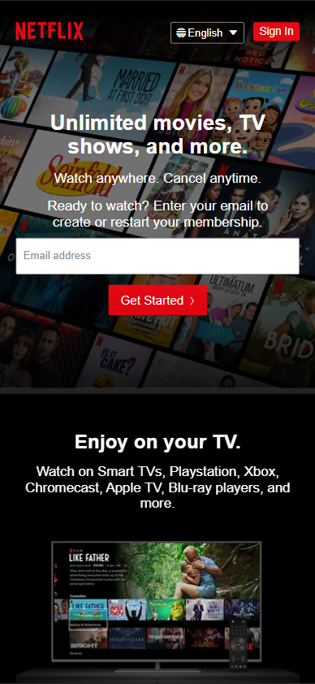

White Space and Clean Design
Apple - Inc
On Apple's homepage, we can see how the principle of White Space and Clean Design is implemented. Apple takes simplicity and minimalism to a beautiful and unclutered showcase of their products. We can appreciate how they use this principle to give the content breathability and focus the eyes of the user on what really matters: a display of their products, and a call to action that will result in Apple achieving their goal of selling more products and showcasing their technology.
PARC: Proximity
Box - Inc
Box's pricing page is a great example of the Proximity principle in PARC. How they decided to group each one of their plans and its respective features really helps the user to easily find the information they're looking for when there's a lot of content displayed in the view.
Visual Hierarchy
Netflix - Inc
There's something beautiful and simple in Netflix's homepage design. They do not hide the fact that what they really want from an user is for them to subscribe, the big input and red button that asks for an email address and reads "Get Started" shows how Netflix used the principle of Visual Hierarchy to bring focus to the user on performing and action the company wants, showing up front and first an invitation to become a subscriber.